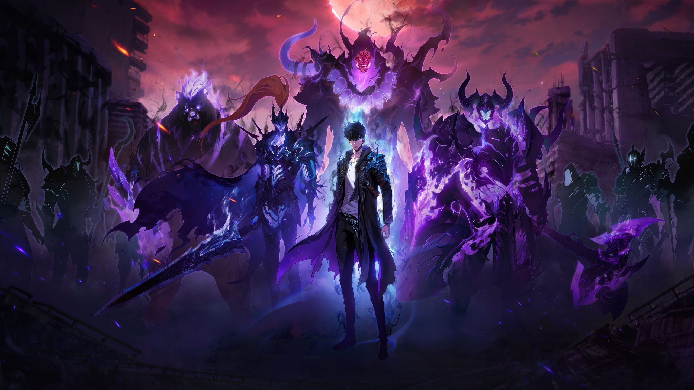
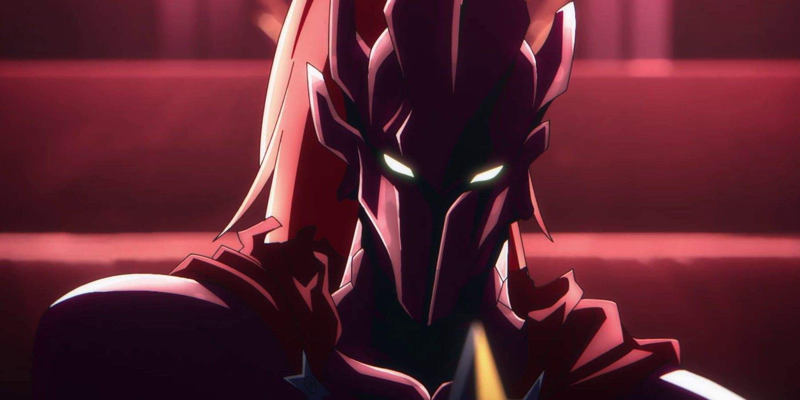
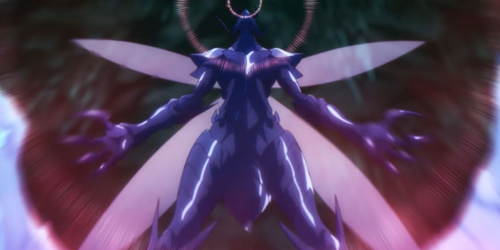
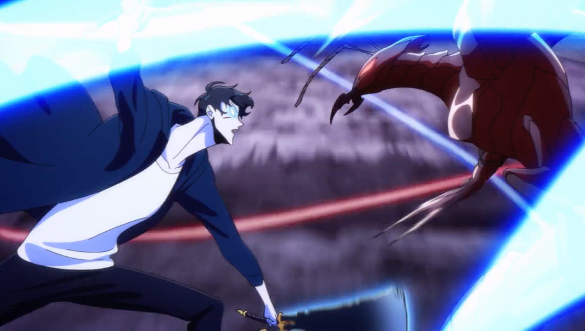
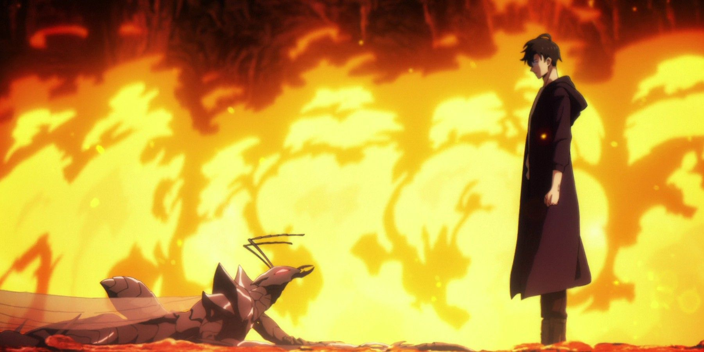
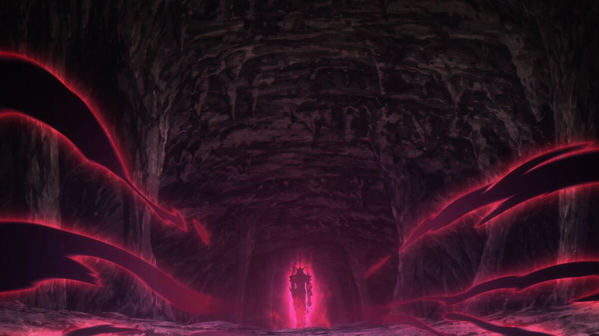
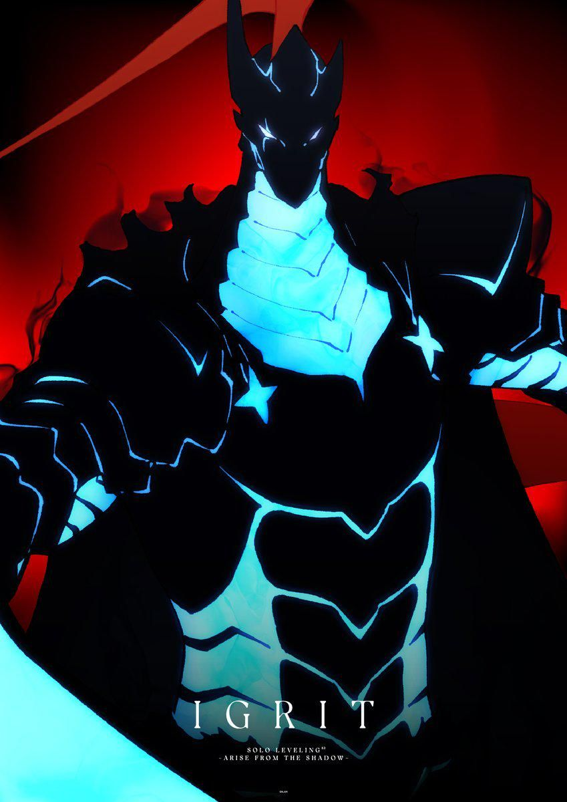

Produced by A-1 Pictures and adapted from a Korean web novel and webtoon, the series follows Sung Jinwoo in a world where hunters fight monsters pouring from gates and dungeons. Unlike every other hunter, Jinwoo grows stronger through a game-like leveling System.

The monster's design and confidence mark him as extraordinary.
Speed, force, music and effects make the battle urgent.
His aggression against Jinwoo's calm reveals the change.
Animation can show what live-action cannot easily film. Sound, color, editing and camera angle make power and danger readable in seconds, even when characters say very little.
Viewers already know a boss-like enemy signals a serious challenge, so the Ant King's entrance raises expectations instantly. A few images do the work of paragraphs.

Viewers must understand what Jinwoo can do and why he grows. Unearned abilities kill suspense.
Extreme speed still has to be followed with details on who strikes, who is hurt, and who is winning.
The Jeju fight matters because other hunters' lives depend on the outcome.
An existing story must fit an episode's running time without losing its shape.

A tense exchange before the clash builds anticipation, then the fight erupts.
Jinwoo's stillness against the Ant King's fury shows who has grown thus no dialogue needed.
Score and impact effects raise urgency and mark each turning point.
Rapid strikes and shadow energy make abstract power visible.
When S-Rank hunters struggle at Jeju, the audience knows the threat is real. Their limits measure Jinwoo's growth.
Iron, Igris and Beru turn Jinwoo's power into something visible, and uniquely his.
Endangered hunters and civilians supply the stakes that keep spectacle from feeling empty.

I used to notice only the fights and the animation. Analyzing the genre showed me those fights are designed to communicate meaning.
The same questions be it the purpose, the audience, the conventions, the advantages,and the limits apply to every text I analyze in ENG 1010.

Official still from Solo Leveling, Episode 24, "Are You the King of Humans." The red glow, dark surroundings and dramatic scale establish supernatural danger before the action begins. Source: A-1 Pictures, 2025. Official episode page — sololeveling-anime.net/story/?id=24

Character imagery: official Solo Leveling anime stills and promotional art © Chugong, DUBU (REDICE STUDIO), A-1 Pictures / Crunchyroll. Used for educational commentary and analysis.